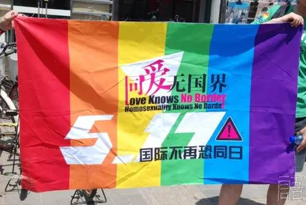
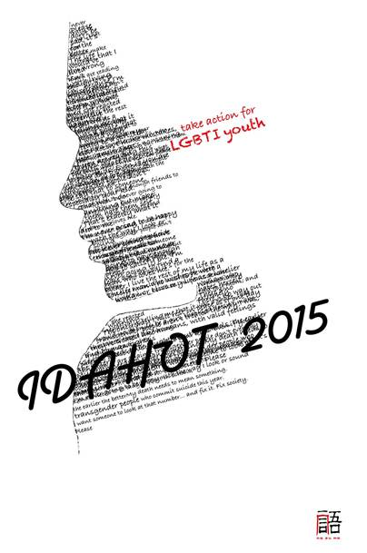
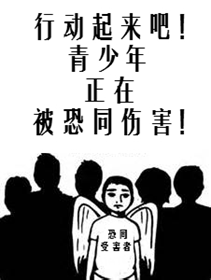
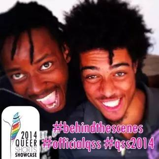
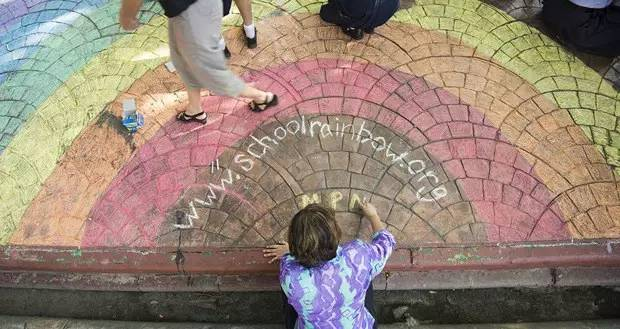
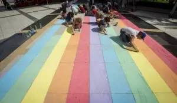
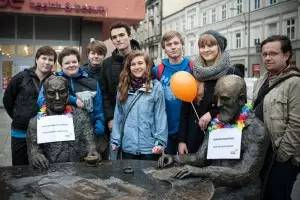

5.17 国际不再恐同日专题
本文转载自：同语桔子报
你知道吗？
在巴西，每28小时就有一名LGBTI因恐同、恐跨仇恨犯罪而被杀害；
在中东，极端宗教组织“伊斯兰国”（ISIS）将同性恋者从高楼推下并处以石刑；
在非洲一些国家，“同性性行为”仍是违反法律的，同性恋/双性恋有时会遭到终生监禁，甚至会被判处死刑！
而在更多的国家，如果一个公民想以自己最认同的性别身份生活，仍然困难重重；
…
同性恋/双性恋/跨性别者正遭受着歧视、敌意与迫害。每一天，这都让全世界上千万人的基本权利和尊严遭到否认。
【国际不再恐同日】
LGBTI,即指女同性恋（Lesbian）、男同性恋（Gay）、双性恋（Bisexual）、跨性别者（Transgender，指性别认同与生理性别不符的个体）和间性人（Intersex，指解剖特征不符合常见男女标准的个体）。
世界卫生组织早在1990年5月17日，就已将同性恋剔除出“精神疾病”分类。为纪念这一重要进步，国际不再恐同日（IDAHO）”于2004年被发起。此后，每年的5月17日成为了反对同性恋恐惧/跨性别恐惧的国际主题日。
在这一天，人们关注因性倾向及性别认同而产生的，一切加在肉体和精神上的暴力及不公平对待。
歧视、暴力与伤害，就在你我身边。这是一个每个人都可以采取行动的时刻。

【经典记录|2015年主题：关注LGBTI青少年】
国际不再恐同恐跨日委员会与世界上的活动家们共同选择了关注LGBTI青少年作为2015年“5•17”的主题。反对恐同/恐跨歧视，使所有年轻的和其他性/别少数群体都有权利在安全和受欢迎的环境中成长，让他们可以在受到尊重的前提下，发展自己的个性和才能。

2014年12月，17岁的美国跨性别少女Leelah Alcorn因遭受到歧视和扭转治疗而自杀。她在遗书中表达的苦闷和绝望，让人读后无比心痛：
“我觉得自己好像困在男孩身体中的女孩…”
“我永远不会对自己的样貌和声音感到开心；我永远也无法有足够多的朋友来满足自我；我永远也无法获得我所需要的爱；我永远找不到一个爱我的男人；我永远无法快乐。要不我将以一个孤单、希望自己是女人的男人身份度过余生。”
为了响应2015年国际不再恐同/恐跨日的主题，设计师Gogo用Leelah Alcorn遗书的内容勾绘出她的侧脸，通过这幅海报呼吁公众关注LGBTI青少年。
“能让我安息的唯一方式，是直到有一天跨性别者不再受到和我一样的待遇，直到他们能够被以“人”的身份对待，其感受为他人所尊重，并享有人们该有的权利。”
家庭
家庭本应是青少年温暖的港湾，但对LGBTI青少年来说，却往往是遭受暴力最多的地方。当孩子喜欢上一个性别相同的人，或者性别表达与社会主流不符时，都会受到家庭严厉的“纠正”和“规范“，且经常伴随着暴力行为。家庭甚至强迫要求孩子进行“扭转治疗”，使LGBTI青少年受到严重的身心伤害。
学校
充满欺凌的校园，对LGBTI青少年来说，是十分危险、不安全的环境。因同性恋/双性恋身份以及不合主流规范的性别表达，青少年在校园内被起绰号、开恶意的玩笑，被敲诈勒索，甚至遭受直接、间接的言语和暴力攻击等。这些霸凌使LGBT青少年陷入孤立，失去学习的动力，并遭遇严重的心理问题。
这些伤害，就发生在我们生活的校园中，就在你我身边，默默地发生着。
医疗体系
年轻的LGBTI群体尚未经济独立，因此很多医疗手术都要求父母的同意，没有对家庭“出柜”的年轻人无法进行医疗咨询。同时，医疗人员通常没有接受过相关的专业培训，导致TA们往往被忽略或用不适当的方式被治疗。此外，跨性别和间性人在性别二元的医疗体系中承受了更多的侮辱和有害治疗。
社会环境
在许多国家，由于法律和社会上的歧视与迫害，LGBTI年轻人被迫寻找安全地带躲避风险，从而迫使离家，四处迁徙。这使TA们面临贫穷、暴力和剥削，加剧了孤立和孤独，并导致衰弱的心理健康状况。

【反对恐同，消除歧视，你我同在】
世界各地炫酷的反对恐同/恐跨歧视的活动：
在柬埔寨，一些组织正在筹备2015年同志骄傲游行和国际不再恐同/恐跨日的庆祝活动，口号是“为沉默者发声”。主办方策划了一系列活动，将会特别关注LGBTI青少年。包括校园霸凌或消减贫困工作坊、纪录片公开放映和在金边的彩虹三轮车活动等。
在博兹瓦纳，为纪念2015年国际不再恐同恐跨日，将举办第二届酷儿短剧展。其中的戏剧展现了LGBTI群体的生活与现实，改善了博兹瓦纳民众对性少数群体的认知。

在泰国曼谷，2014年5月17日国际不再恐同恐跨日的前夕，彩虹粉笔画让这座城市的接到充满色彩，将LGBTQI社群的可见性带入公共空间


在波兰，LGBT团体在2014年5月17日为波兰诗人杜维姆加上彩虹装饰。
---“如果他活到今天，他会反对恐同”

反对恐同，消除歧视，你我同在。
成为那个你想要世界发生的改变！
Be the change you want to see in the world！